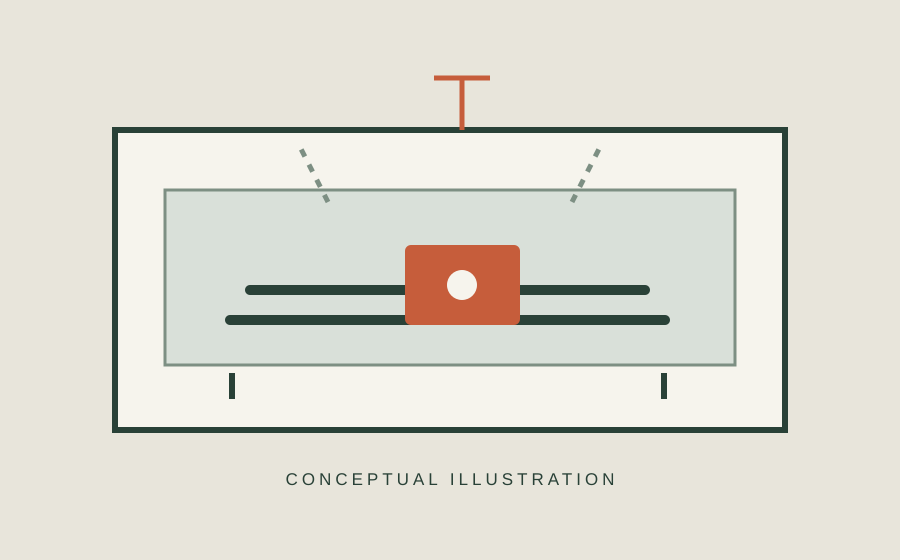

SPACE SYSTEMS / 2022-2025
Motion systems for environmental testing
Design ownership, analysis, integration and qualification across two ESA test-facility mechanisms.
MECHANICAL DESIGN ENGINEER · PROPULSION & SPACE SYSTEMS
I am a mechanical design engineer working across propulsion, spacecraft and complex mechanisms. My work spans concept design, structural and thermal verification, manufacturing definition, integration and test.

A SELECTION OF MY WORK

SPACE SYSTEMS / 2022-2025
Design ownership, analysis, integration and qualification across two ESA test-facility mechanisms.

PROPULSION / CRANFIELD
Student-led engine development spanning mechanical systems, test infrastructure and campaign delivery.

LAUNCH SYSTEMS / 2021-2022
Structural workstream leadership for a recoverable two-stage microsatellite launcher concept.